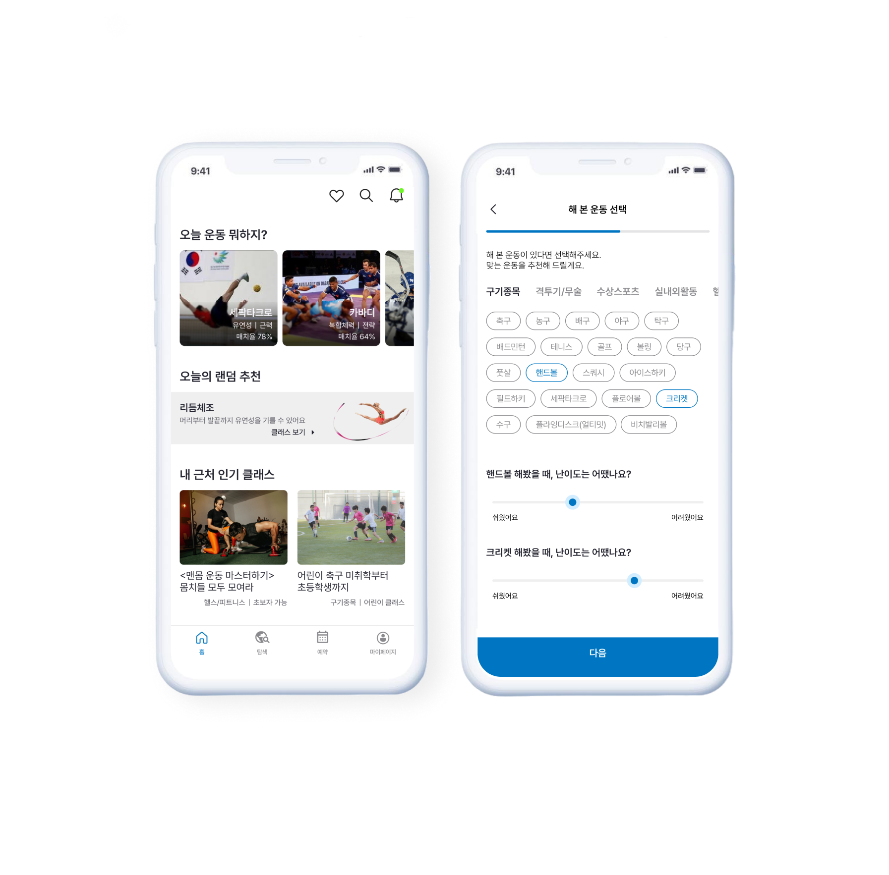
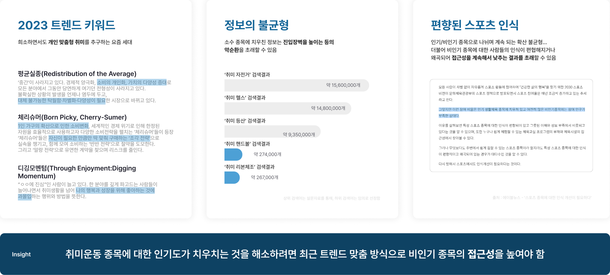
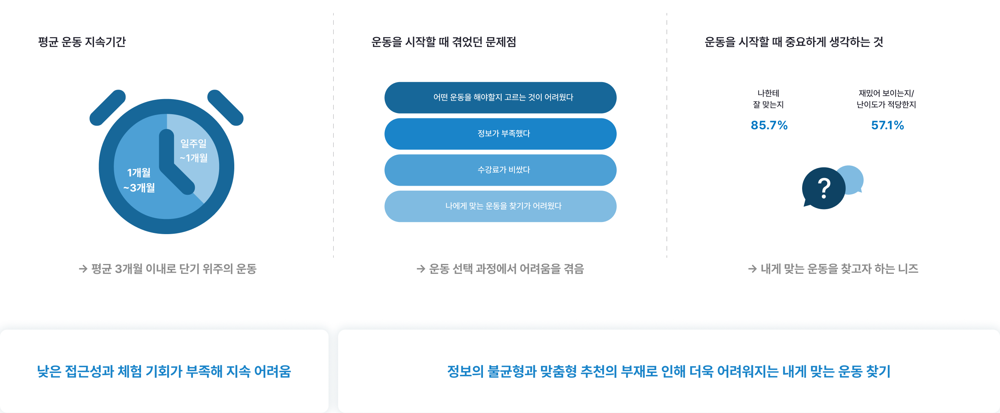
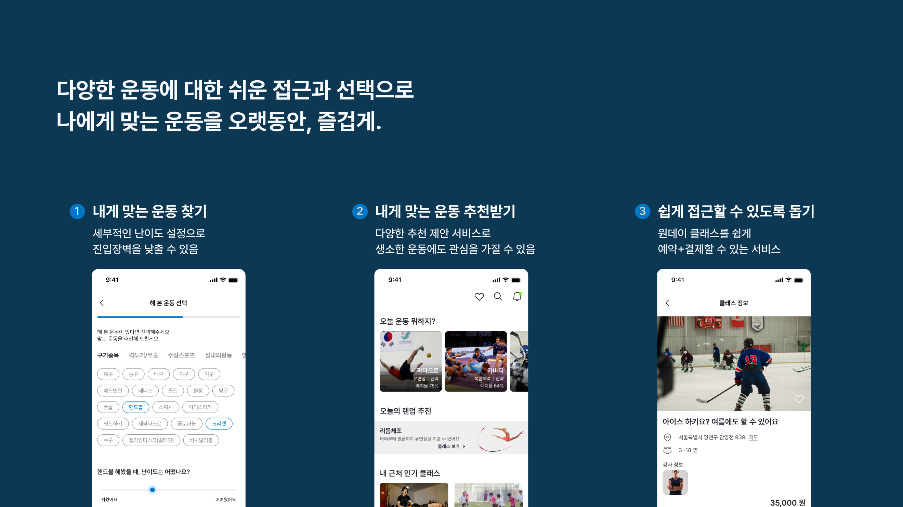
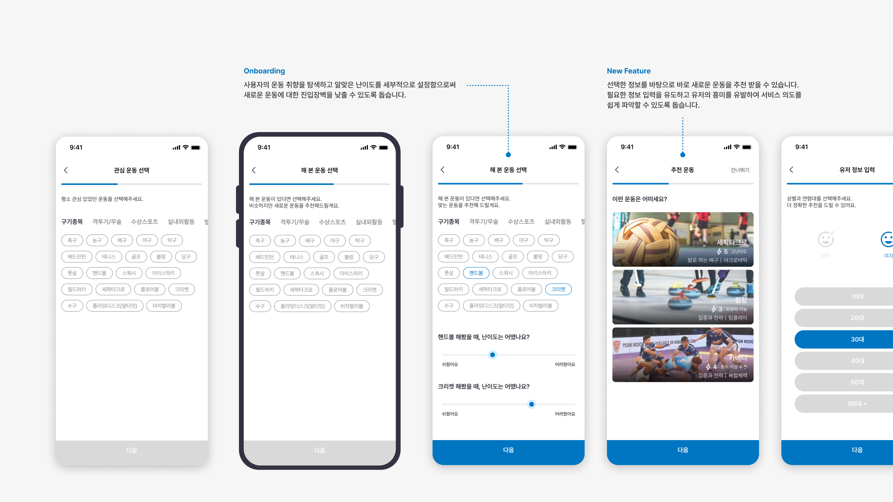
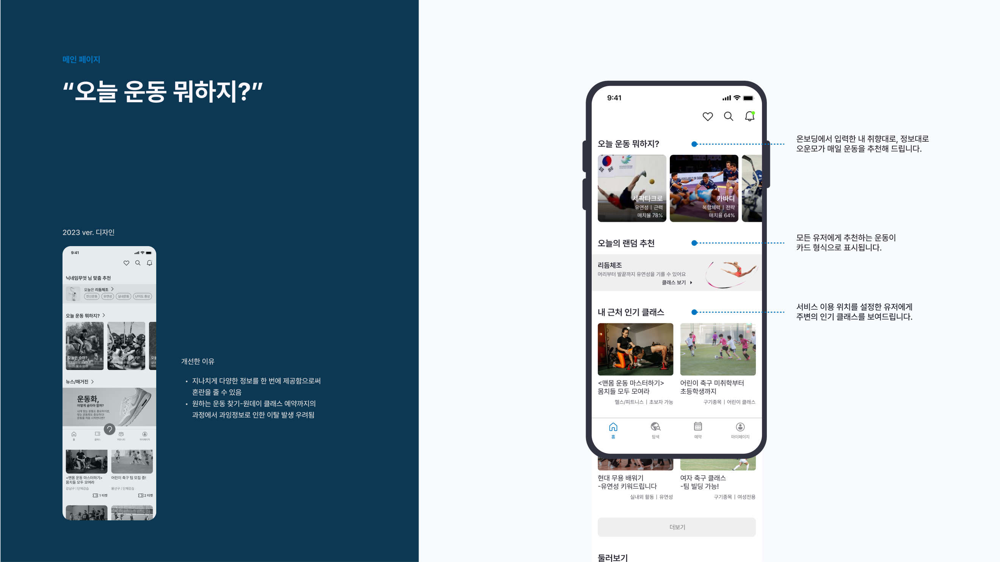
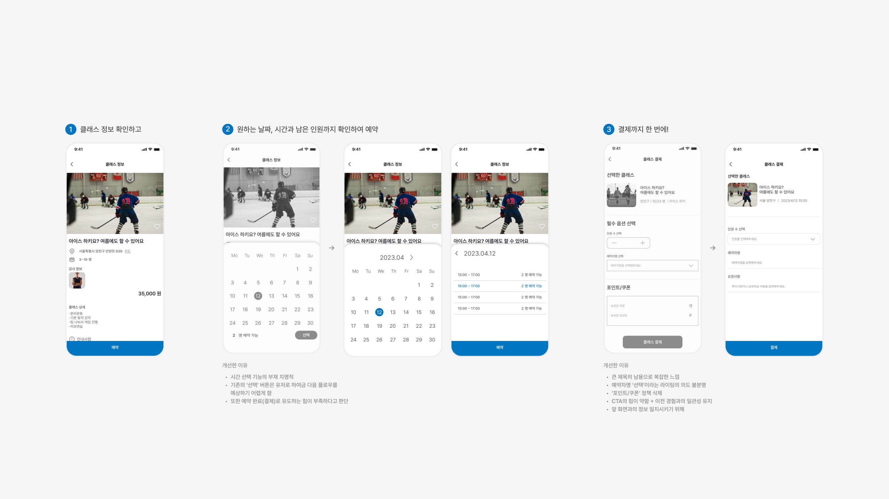
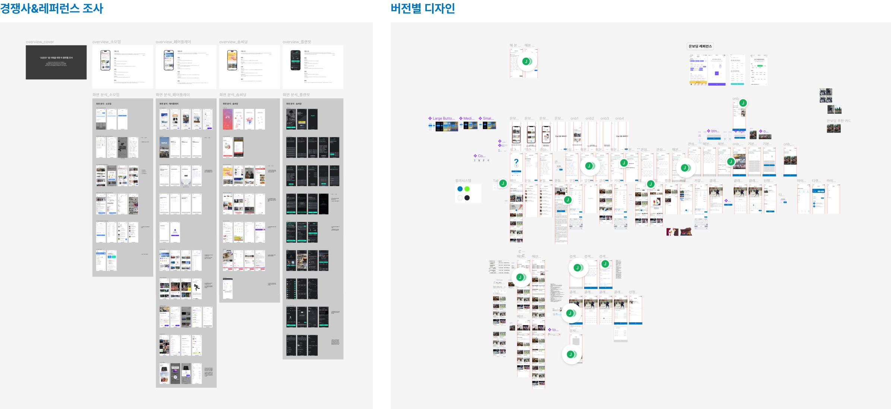

UXUI
오운모(오늘 운동 뭐하지?) 앱 기획 개선안
오운모는 취미 운동 맞춤 추천 & 원데이 클래스 예약 서비스로, 사람들이 보다 더 다양한 운동에 쉽게 접근할 수 있도록 돕습니다. 2023년에 진행했던 기획에서 부족했던 점을 보완하고 개선하기 위해 대화형 AI를 활용하여 진행한 디벨롭 프로젝트입니다.
2025. 09 - 10
개인 프로젝트

Background
헬스나 요가 같은 운동은 비교적 쉽게 접할 수 있지만 아이스하키, 리본체조 등 생소한 종목의 스포츠들은 많은 사람들에게 그저 '어려운 운동'일 뿐입니다. 물론 시간, 장소, 비용 등 여러 현실적인 제약도 있겠지만, "모든 사람이 어떤 스포츠든 부담 없이 즐길 수 있는 세상을 만들면 어떨까?" 라는 마음으로 더 많은 사람들이 자신의 흥미와 적성에 맞는 운동을 발견하고, 보다 더 쉽게 접근할 수 있도록 도울 수 있는 서비스를 제작하고자 했습니다.
Research
국가통계포털의 관련 설문조사를 통해 사람들의 취미운동에 대한 인식과 행태를 파악했습니다. 또한 취미운동에 대한 전반적인 트렌드를 조사하며 취미운동 종목에 대한 인지도나 인기도가 특정 종목으로만 매우 치우쳐져 있음을 인식하고, 이 인기도를 분산시키면서 많은 사람들이 더욱 다양한 취미운동에 관심 가질 수 있게 하기 위한 프로젝트입니다.

실제로 취미로 운동을 즐기는 사람들에게 의견을 물어보게 되었습니다.운동을 시작하게 되면 평균 3개월 이내로 그만두게 되며 오랫동안 지속하지 못한다는 사실을 알게되었고, 운동을 시작할 때 겪었던 문제점을 들으며 서비스에 대한 니즈를 파악했습니다.또한 운동에 대해 중요하게 생각하는 점을 통해 서비스가 나아가야 할 방향에 대한 의견도 들을 수 있었습니다.

Problem & Solution
운동 수업을 수강하려면 학원을 등록해야 하는데, 보통의 학원은 1개월단위로 등록합니다. 이 운동이 나에게 잘 맞는지 잘 모르는 운동을 1개월씩 등록을 하는 것보다 원데이 클래스 수강을 통해 원하는 시간에 수업을 들어보고 운동에 대한 판단을 하게 만드는 것이 좋다고 생각했습니다. 그래서 원데이 클래스라는 특징을 이용했고,또한 다양한 운동을 접하게 만드는 것이 서비스의 목표인만큼 생소한 운동에도 관심을 가지게 만들어야 하므로, 사용자의 운동 취향이나 조건 등을 통해 적당한 운동을 추천해주고 보여주는 것이 생소한 운동에 대한 거부감을 줄이는데에 도움이 될 것이라고 생각했습니다.

Main features
AI를 이용해 우리나라에서 수강할 수 있는 학원이 있는 모든 운동 종목에 대한 카테고리별, 난이도별등의 정보를 태깅한 후에 사용자가 선택한 정보에 맞는 운동을 보여주는 기능입니다.또한 소재가 운동인만큼 신체적인 조건도 필요하기에, 성별과 연령대 개인정보를 수집하게끔 설계했습니다.

처음 기획 시 정보의 불균형을 해소하고자 정보제공의 의도로 ‘뉴스/매거진’과 ‘커뮤니티’ 파트를 구상했었습니다.그러나 기존의 메인화면에서 한 번에 너무 다양한 정보를 유저에게 보여준다는 문제점이 있었습니다.다양한 취미운동을 더 많은 사람들이 쉽게 접할 수 있도록 하려면, 화면 상에서 콘텐츠로 정보를 간접적으로 전달하는 것이 아닌, 직접 체험하도록 유도하는 것이 기획 의도에 더 알맞다고 판단했습니다. 그래서 정보 전달(운동의 역사, 트렌드나 광고 등) 파트를 제거하고 ‘맞춤 추천’과 그에 맞는 원데이 클래스를 바로 예약하고 결제할 수 있도록 플로우를 재구성 했습니다.

그래서 내가 선택한/원하는 정보에 맞는 운동을 추천받고 원데이 클래스를 바로 예약할 수 있는 플로우를 위해, 또한 효율적으로 예약할 수 있는 플로우를 위해 화면을 재구성했습니다.원데이 클래스 예약에 필수적인 요소들로만 화면을 구성하고, 불필요하거나 혼동을 줄 수 있는 요소는 제거했습니다.

Retrospective
기존의 서비스를 리뉴얼하는 것이 아닌 기획 단계부터 경험할 수 있는 프로젝트였습니다. 단순히 ‘이런 서비스가 있으면 좋겠다’라는 생각에서 시작했지만기획, 설계를 하며 데이터 처리 방법이나 비즈니스 모델 등을 고려할 수 있었습니다. 또한 기존 버전의 디자인을 디벨롭하면서 실사용 테스트를 거치지 못한 것이 아쉽습니다. AI 기술을 통해 A/B 테스트를 진행하긴 했지만실제로 취미 운동을 즐기는 사람들의 피드백을 들을 수 있었다면 더 좋았을 듯 합니다.
